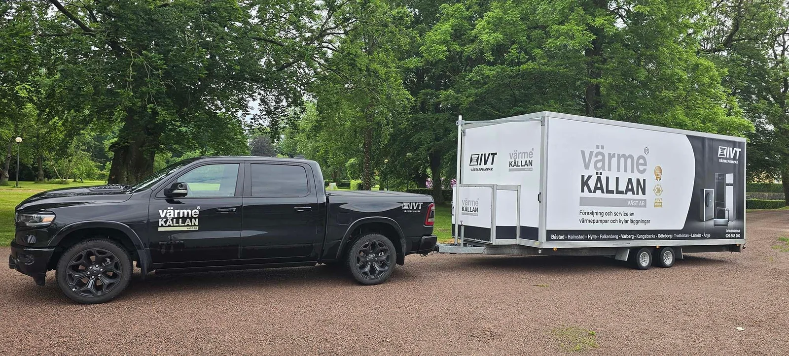

Michael Behning
Service & Installation
m.behning@ivtcenter.seMobiltelefon: 0702-610619Installation, service och personlig rådgivning. Värmekällan hjälper dig att hitta en värmelösning som passar ditt hus i Helsingborg med omnejd.
Brovägen 12
266 75 Hjärnarp
Vardagar 08.00-16.00
Lunchstängt 11.30-12.30
Helger stängt
Jour vid akuta driftstopp: 070-852 05 26

Vi hjälper dig från första kontakt till installation och service.
Service & Installation
m.behning@ivtcenter.seMobiltelefon: 0702-610619Om du vill installera en värmepump är det viktigt att veta vilken typ som är bäst för dig. Värmepumpar kan installeras på många olika sätt. Vissa människor har dem installerade inuti sina hem, medan andra har dem installerade utanför.
En luftvärmepump använder luft utanför ditt hem för att kyla ner det, eller värma upp det under vintermånaderna, medan en jordvärmepump använder jord eller vatten från en sjö eller flod.
Visste du att bergvärme är den mest effektiva uppvärmningsformen när det gäller energiförbrukning? Geotermisk uppvärmning uppnår den högsta temperaturen under de kallaste månaderna, då mest energi går åt för att värma upp huset.
När du har för långt till berg eller för liten tomt för att gräva ner jordvärme är en luft/vatten-värmepump det självklara valet. Den här typen sparar utrymme och pengar på installationskostnaderna jämfört med andra system, som luft-luft- eller frånluftspumpar.
Luft-luft-värmepumpen är väl lämpad för dagens smarta hem. Dess luftreningsfunktioner, AC och det faktum att de är lätta att styra via SMS eller WiFi gör att de passar de flesta hem idag.
Om du bor i ett område där det är svårare att installera jordvärme eller om du inte har tillräckligt med utrymme på din fastighet för en luft-vatten-värmepump, kan du istället överväga att installera en frånluftsvärmepump. Dessa pumpar installeras ofta i tvättstugor eller badrum där utrymmet är mer begränsat.
Välkommen till Värmekällan Väst AB. Vi installerar och servar värmepumpar, och har gjort det under lång tid, och eftersom vi är återförsäljare av IVT kan vi alla deras produkter utan och innan. Detta innebär att om du vill köpa en ny värmepump eller bara har frågor om din befintliga pump, kan vi hjälpa dig.
Om du har några frågor om våra värmepumpar eller vill ha en offert för installation eller service är du välkommen att kontakta oss på Värmekällan.
Vill du att din värmepump ska hålla så länge som möjligt? I så fall rekommenderas regelbunden service på värmepumpen av en auktoriserad servicepartner. Som återförsäljare av IVTs värmepumpar har vi på Värmekällan Väst AB/IVT Center certifierade servicereparatörer som ser till att din investering lönar sig så länge som möjligt.
Våra servicereparatörer säkerställer att din värmepump får det underhåll som krävs och behövs. Ring oss redan idag så ser vi till att en installatör besöker dig så snart som möjligt.
Vätske-/vattenvärmepumpar fungerar på samma sätt som luftvärmepumpar och hämtar energin från jorden. De kallas också för vätske-/vattenpumpar eftersom de hämtar sin energi antingen från berget, jorden eller från sjöar i närheten av huset. När pumpen samlar in denna energi omvandlas den till värme som sedan levereras till det vattenburna värmesystemet och vidare till varmvattnet.
Du använder alltså samma typ av pump för att utnyttja dessa olika energikällor, även om vissa justeringar krävs för just den typ du använder.
Att värma upp ditt hem med en luft/vatten-värmepump är ett utmärkt sätt att spara pengar på din energiräkning.
En luft-vatten-värmepump hämtar energin från luften utanför huset. Vanligtvis installeras den här typen av pump tillsammans med en inomhusenhet från samma tillverkare. Denna del innehåller varmvattenberedaren, elförsörjningen och kontrollenheten. Det är också möjligt att komplettera ett befintligt vedeldat system med en luft/vatten-värmepump.
En frånluftsvärmepump ventilerar hemmet eller fastigheten och ger även värme och varmvatten. Det är detta som återvinns till ny värme. Frånluft är alltså den gamla dåliga luften som har värmts upp och som ska blåsas ut. Samtidigt som den gamla luften ventileras ut sugs ny frisk luft in utifrån via ventiler i fönster eller väggar.
Luft-luft-värmepumpar är ett utmärkt sätt att komplettera ditt befintliga värmesystem.
Värmepumpen fungerar genom att överföra värme från luften utanför till ditt hem, vilket innebär att du kan behålla dina radiatorer och använda mindre energi för att värma upp ditt hem. Luft-till-luft är ett utmärkt alternativ om du redan har ett befintligt värmesystem, men kanske inte kan hålla temperaturen i hemmet under vintermånaderna.
Vi har installerat många värmepumpar i Helsingborg, och vi vill gärna hjälpa dig också.
Det finns två stora skäl till varför vi installerar så många värmepumpar i Helsingborg: de är kostnadseffektiva och miljövänliga. Genom att ersätta ditt befintliga värmesystem med en värmepump kan du spara pengar på uppvärmning av hemmet och samtidigt göra din del för miljön. Vi på Värmekällan hjälper dig gärna att göra både och! Installationen av värmepumpen går snabbt och smidigt, så att du kan börja spara pengar strax därefter.
Kontakta oss idag på Värmekällan oss så hjälper våra certifierade installatörer dig att spara pengar på hemvärmen. Vi installerar värmepumpar åt privatpersoner och företag i Helsingborg och erbjuder både kostnadsfri offert och hembesök för att du ska känna dig trygg i att värmepumpen är rätt för just dig, samt för att vi ska kunna ge dig den hjälp du som kund förtjänar.
För att er värmepump ska hålla så länge som möjligt är det viktigt med regelbunden service av en auktoriserad servicepartner. Våra servicereparatörer säkerställer att din värmepump håller sig i gott skick och att den fungerar optimalt. Detta medför att den drar mindre energi och och att sparar mer pengar.
Vår personal på Värmekällan är experter på allt som har med installation, dimensionering, service och reparation av värmepumpar i Helsingborg och övriga Skåne. Värmepumpar har varit vårt fokus i över 30 år och med erfarenheten vi har införskaffat oss under dessa år vet vi hur viktigt det är att värmepumpen underhålls som den ska.
Vi är även medvetna om hur viktigt det är för våra kunder att få hjälp fort om värmepumpen stannar helt. Eftersom en luftvärmepump arbetar dygnet runt, kan den också stanna dygnet runt. Därför erbjuder vi även jour där man kan kontakta oss dygnet runt för att få hjälp sin värmepump.
För värmepumpar upp till 20kW tar en underhållsservice cirka 1 timme på plats och kostar 2500 kr. Detta är ett totalpris som innefattar resan, servicebilen samt arbetet på plats. Vid eventuella fel, tillkommer kostnader för att åtgärda dessa.
För värmepumpar på 20kW och större prissätts dessa individuellt.
Vi erbjuder möjligheten för våra kunder att finnas med i ett register för att få sin värmepump servad varje eller vartannat år. Detta innebär att vi tar kontakt med fastighetsägaren eller annan ansvarig när det börjar bli dags för service så att en tid kan bokas in och att rätt person är på plats.
Service och underhåll försöker vi att utföra under vår, sommar samt i början på hösten eftersom vi vill försäkra oss om att hinna hjälpa så många som möjligt innan kylan och vintern är på ingång. På vintern prioriteras inte underhållsservice, utan görs då enbart i mån av tid.